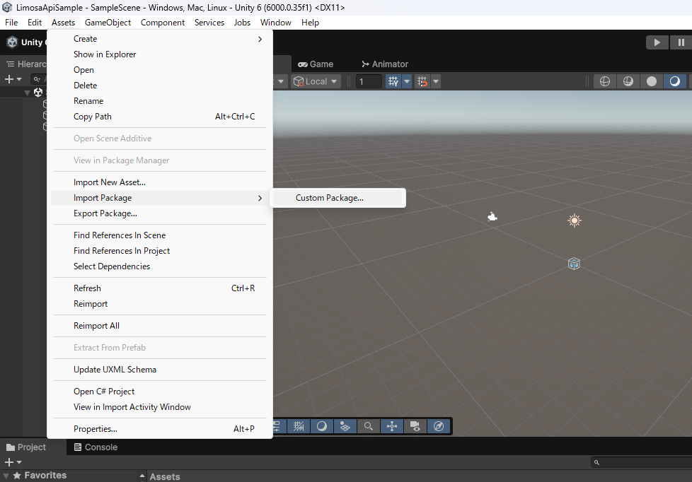
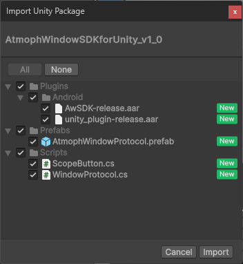
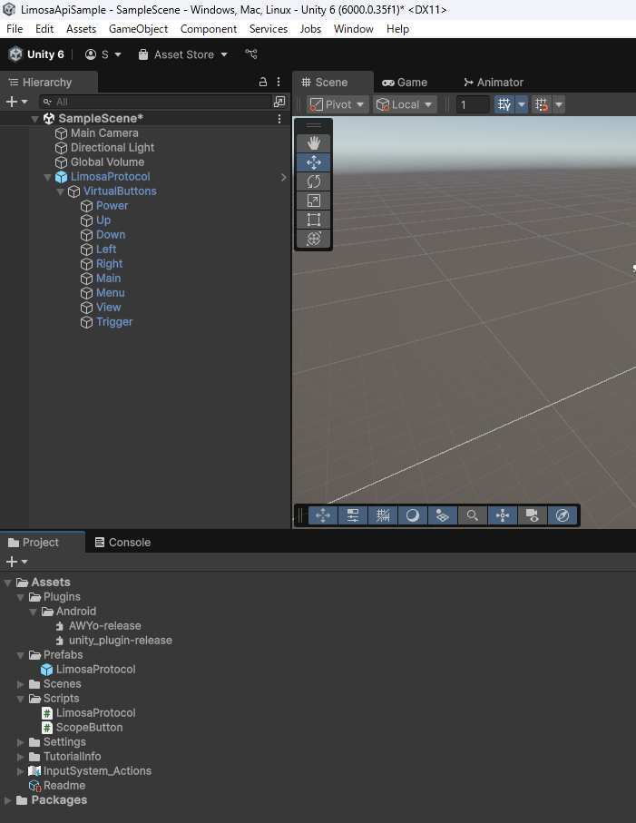
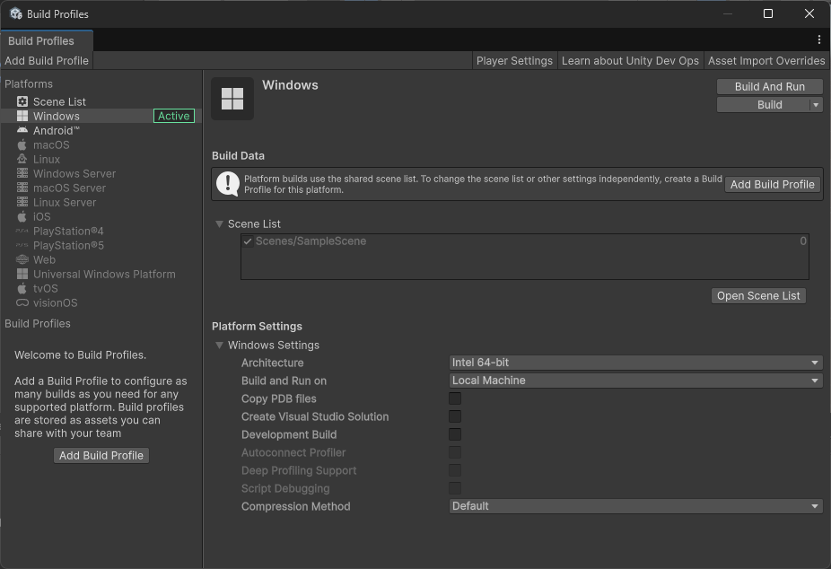
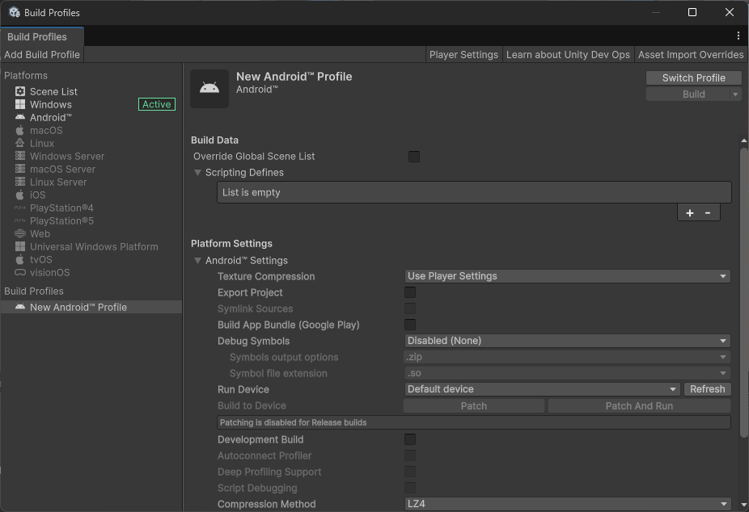
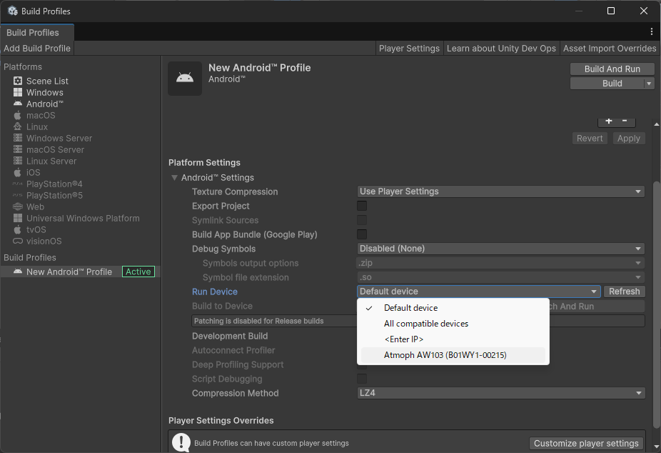
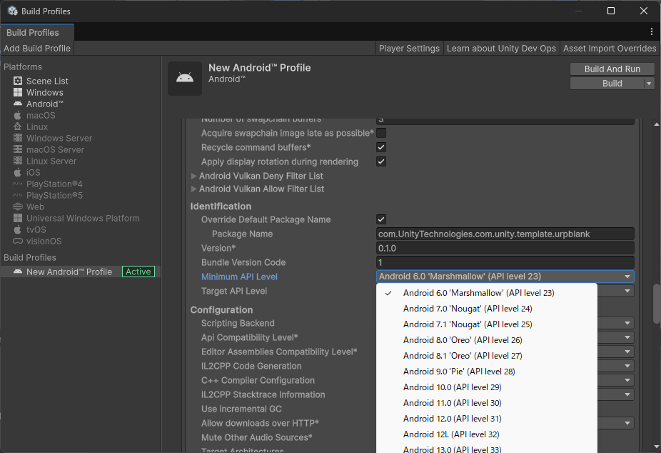
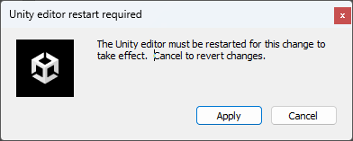
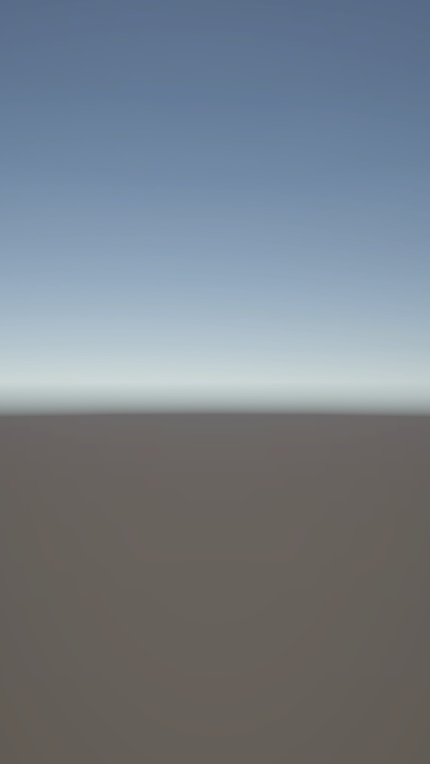

"インストールとビルド設定"の目次
SDKのインストールは、Unityのプロジェクトに"LimosaAPI.unitypackage"をインポートすることで行います。
※ 各図はUnity6(6000.0.35f1.7976.6927)のものです。
インストール手順
- Unityのメニューバーの次のボタンから"LimosaAPI.unitypackage"をインポートする
Assets -> Import Package -> Custom Package

- "Import Unity Package"のダイアログで、"Import"ボタンを推す

SDKの内容
| ファイル | 説明 |
|---|---|
| AWYo-release.aar | Yo本体からのインテントを受信するAndroid ARchive |
| unity_plugin-release.aar | AWYo-release.aar で受信したインテントをトリガーにUnityに通知を送るAndroid ARchive |
| LimosaProtocol.prefab | Yoの機能を利用するためのプレハブアセット |
| LimosaProtocol.cs | Yoの機能を利用したり、Yoからの通知を受けるシングルトンクラス"LimosaProtocol"が定義されているC＃ソースファイル。unity_plugin-release.aarと連携する。LimosaProtocol.prefabにComponentとしてアタッチされている。 |
| ScopeButton.cs | LimosaProtocolクラスで受け取ったScopeのボタン操作をUnityのInputControlにマッピングするためのクラス"ScopeButton"が定義されているC＃ソースファイル。LimosaProtocol.prefab内のScopeの各ボタンに対応するゲームオブジェクトにComponentとしてアタッチされている。 |
※ SDKをインストール後、LimosaProtocol.prefabをHierarchyウィンドウに追加した状態

ビルド設定
YoはAndroidベースのOSで動いていますので、ビルド設定はAndroid用プロファイルを用います。
- Unityのメニューバーの次のボタンから"Build Profiles"ダイアログを表示する
File -> Build Profiles

- "Add Build Profile"ボタンで"Platform Browser"ダイアログを開き、"Android"を選択して"Add Build Profile"ボタンを押す。これで新しい"Android Prifile"ができる。

- "Switch Profile"ボタンで 2 で追加したAndroid Prifileに切り替える。
- Android Prifile の次の設定を変更する。 4-1. "Run device" でYo開発機を選択
※図はPCにUSBでYo開発機を繋いだ状態。"Atmoph AW103(XXXXXX-XXXXX)"がYo開発機。XXXXXX-XXXXXのシリアルは開発機ごとに異なる。本体にIPアドレスを設定した場合、IPアドレスでも選択可能。

4-2. "Customize player settings"ボタンを押して設定項目を拡張
4-3. "Identification" -> "Minimum API Level"を"Android 13.0(API level 33)"に設定

Note
"Configuration" -> "Active Input Handling"はプロジェクトに合わせて設定してください。設定時に次の"Unity editor restart required"ダイアログが表示される場合は、"Apply"ボタンを押してUnity Editorを再起動します。 
以上でビルド設定は完了です。Android Prifileの"Build And Run"ボタンを押して、アプリがビルドされYo開発機で起動されたら成功です。
Universal 3Dテンプレートで作った空アプリでビルドと起動が成功すると、Yo開発機に次のような画面が表示されます。
※ "Build And Run"ボタンを押すとビルド結果のAPKファイルを保存するパスの設定が求められます。任意のパスを設定してください。